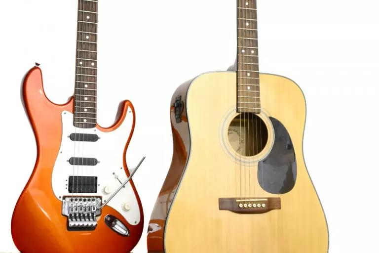
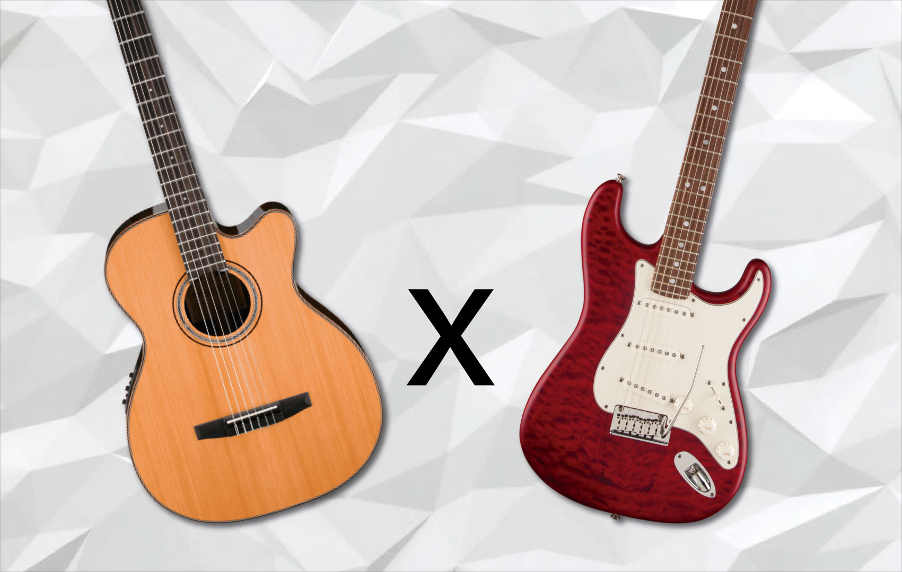
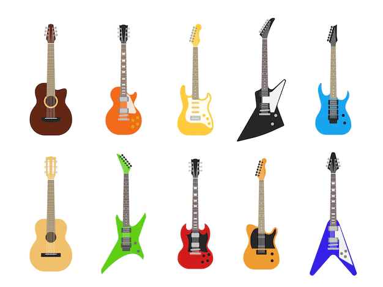
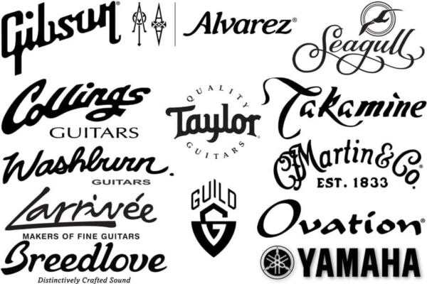

Escolha a guitarra certa para você
Publicado em 29 de março de 2023
A guitarra é um dos instrumentos musicais mais icônicos e populares do mundo. Desde o rock ao jazz, do blues ao pop, a guitarra tem sido um elemento fundamental da música por décadas. Se você está interessado em tocar guitarra, a escolha do instrumento certo é fundamental para o seu sucesso. Neste post, vamos discutir como escolher a guitarra certa para você.
- ESTILO DE MÚSICA: O primeiro passo para escolher a guitarra certa é considerar o estilo de música que você quer tocar. Cada estilo de música tem suas próprias características sonoras e técnicas de tocar. Se você está interessado em tocar rock, uma guitarra elétrica pode ser a melhor escolha. Se você quer tocar música clássica, uma guitarra acústica pode ser uma melhor opção. Certifique-se de escolher um instrumento que combine com o estilo de música que você pretende tocar. 
- TIPO DE GUITARRA: Há dois tipos principais de guitarras: acústicas e elétricas. Guitarras acústicas têm um som mais natural e são mais versáteis em termos de onde podem ser tocadas. Guitarras elétricas produzem um som mais distinto e são geralmente tocadas com um amplificador. Se você quer tocar em casa ou em locais pequenos, uma guitarra acústica pode ser a melhor escolha. Se você quer tocar em uma banda ou em locais maiores, uma guitarra elétrica pode ser a escolha ideal. 
- TAMANHO E FORMA: As guitarras vêm em diferentes tamanhos e formas. Se você é um adulto com um corpo grande, uma guitarra maior pode ser mais confortável. Por outro lado, se você é uma pessoa mais jovem ou tem um corpo menor, uma guitarra menor pode ser mais fácil de tocar. A forma da guitarra também pode fazer diferença, já que algumas formas podem ser mais confortáveis para determinados tipos de toque. 
- MARCA E MODELO: Assim como carros e outros produtos, as guitarras variam em qualidade e preço. Algumas marcas são mais conhecidas e confiáveis que outras. É importante pesquisar e ler avaliações antes de comprar uma guitarra. Se você é um iniciante, pode ser melhor optar por uma guitarra mais acessível e de qualidade razoável. Se você é um guitarrista mais experiente, pode ser que valha a pena investir mais em um modelo premium. 
- EXPERIMENTE ANTES DE COMPRAR: Por fim, é importante experimentar a guitarra antes de comprá-la. Isso permitirá que você teste a qualidade do som, sinta a sua ergonomia e verifique se ela é confortável para tocar. Se possível, experimente diferentes tipos de guitarra em diferentes lojas para ter uma ideia do que funciona melhor para você.
Em resumo, escolher a guitarra certa pode fazer toda a diferença no seu desenvolvimento como guitarrista. Considere o estilo de música que você quer tocar, o tipo de guitarra que você prefere, o tamanho e a forma, a marca e o modelo, e experimente antes de comprar. Boa sorte na sua jornada como guitarrista!